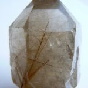

Название рутиловый кварц произошло от латинского слова rutilus — золотисто-красный. Другие названия минерала и его разновидностей: стрелы любви, стрелы Купидона, волосы Венеры, сагенит.
Среди различных разновидностей обычной двуокиси кремния знатоки минералов особо выделяют прозрачные кристаллы кварца с тонковолокнистыми включениями, напоминающими волоски или тончайшие иголочки. Это рутиловый кварц - кварц с тонкими кристаллическими включениями других цветных минералов (золотистого и/или черного цвета). Минерал рутил обеспечивает прелестные золотистые включения и формирует почти самый дорогой камень из семейства кварцев (рутил, расположенный звездой, также увеличивает ценность рубина). Рутил встречается в виде призматических, столбчатых, игольчатых и волосовидных кристаллов с простыми формами. Характерны коленчатые двойники. Другая типичная форма кристаллов – тонкие длинные иглы или «волоски» внутри кристаллов. Кристаллы нередко изогнуты. Толщина таких кристаллов варьирует от миллиметра до десятых долей миллиметра, а цвет может казаться золотистым, серебристым и даже зеленоватым. Распространены мелко- и крупнозернистые сплошные массы, где рутил ассоциирует с кварцем.
Рутиловый кварц является диоксидом кремния. Окраска минералов бывает темно-бурой, буровато-желтой, золотистой, серебристой, зеленовато-серой. Блеск — стеклянный. Твердость — 6,5 - 7,0; плотность — 2,6 г/см3.
Основные месторождения: Казахстан, Пакистан, Норвегия, США, Бразилия, Мадагаскар, Австралия.
Каталог минералов